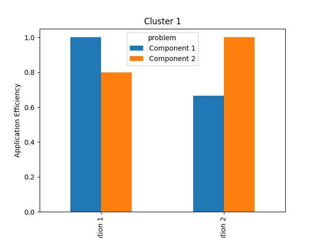
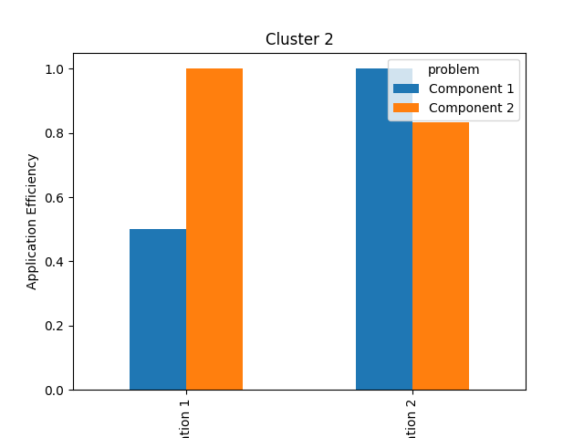

Note
Go to the end to download the full example code.
Handling Software with Multiple Components¶
Viewing applications as composites.
When working with very large and complex pieces of software, reporting performance using a single number (e.g., total time-to-solution) obscures details about the performance of different software components. Using such totals during P3 analysis therefore prevents us from understanding how different software components behave on different platforms.
Identifying which software components have poor P3 characteristics is necessary to understand what action(s) we can take to improve the P3 characteristics of a software package as a whole. Although accounting for multiple components can make data collection and analysis slightly more complicated, the additional insight it provides is very valuable.
Tip
This approach can be readily applied to parallel software written to heterogeneous programming frameworks (e.g., CUDA, OpenCL, SYCL, Kokkos), where distinct “kernel”s can be identified and profiled easily. For a real-life example of this approach in practice, see “A Performance-Portable SYCL Implementation of CRK-HACC for Exascale.
Data Preparation¶
To keep things simple, let’s imagine that our software package consists of just two components, and that each component has two different implementations that can both be run on two different machines:
component
implementation
machine
fom
Component 1
Implementation 1
Cluster 1
2.0
Component 2
Implementation 1
Cluster 1
5.0
Component 1
Implementation 2
Cluster 1
3.0
Component 2
Implementation 2
Cluster 1
4.0
Component 1
Implementation 1
Cluster 2
1.0
Component 2
Implementation 1
Cluster 2
2.5
Component 1
Implementation 2
Cluster 2
0.5
Component 1
Implementation 2
Cluster 2
3.0
Our first step is to project this data onto P3 definitions, treating the functionality provided by each component as a separate problem to be solved:
problem application platform fom
0 Component 1 Implementation 1 Cluster 1 2.0
1 Component 2 Implementation 1 Cluster 1 5.0
2 Component 1 Implementation 2 Cluster 1 3.0
3 Component 2 Implementation 2 Cluster 1 4.0
4 Component 1 Implementation 1 Cluster 2 1.0
5 Component 2 Implementation 1 Cluster 2 2.5
6 Component 1 Implementation 2 Cluster 2 0.5
7 Component 2 Implementation 2 Cluster 2 3.0
Note
See “Understanding Data Projection” for more information about projection.
Application Efficiency per Component¶
Having projected the performance data onto P3 definitions, we can now compute the application efficiency for each component:
problem platform application fom app eff
0 Component 1 Cluster 1 Implementation 1 2.0 1.000000
1 Component 2 Cluster 1 Implementation 1 5.0 0.800000
2 Component 1 Cluster 1 Implementation 2 3.0 0.666667
3 Component 2 Cluster 1 Implementation 2 4.0 1.000000
4 Component 1 Cluster 2 Implementation 1 1.0 0.500000
5 Component 2 Cluster 2 Implementation 1 2.5 1.000000
6 Component 1 Cluster 2 Implementation 2 0.5 1.000000
7 Component 2 Cluster 2 Implementation 2 3.0 0.833333
Note
See “Working with Application Efficiency” for more information about application efficiency.
Plotting a graph for each platform separately is a good way to visualize and compare the application efficiency of each component:
cluster1 = effs[effs["platform"] == "Cluster 1"]
pivot = cluster1.pivot(index="application", columns=["problem"])["app eff"]
pivot.plot(
kind="bar",
xlabel="Component",
ylabel="Application Efficiency",
title="Cluster 1",
)
plt.savefig("cluster1_application_efficiency_bars.png")
cluster2 = effs[effs["platform"] == "Cluster 2"]
pivot = cluster2.pivot(index="application", columns=["problem"])["app eff"]
pivot.plot(
kind="bar",
xlabel="Component",
ylabel="Application Efficiency",
title="Cluster 2",
)
plt.savefig("cluster2_application_efficiency_bars.png")
- 
- 
On Cluster 1, Implementation 1 delivers the best performance for Component 1, but Implementation 2 delivers the best performance for Component 2. On Cluster 2, that trend is reversed. Clearly, there is no single implementation that delivers the best performance everywhere.
Overall Application Efficiency¶
Computing the application efficiency of the software package as a whole requires a few more steps.
First, we need to compute the total time taken by each application on each platform:
package = proj.groupby(["platform", "application"], as_index=False)["fom"].sum()
package["problem"] = "Package"
print(package)
platform application fom problem
0 Cluster 1 Implementation 1 7.0 Package
1 Cluster 1 Implementation 2 7.0 Package
2 Cluster 2 Implementation 1 3.5 Package
3 Cluster 2 Implementation 2 3.5 Package
Then, we can use this data to compute application efficiency, as below:
problem platform application fom app eff
0 Package Cluster 1 Implementation 1 7.0 1.0
1 Package Cluster 1 Implementation 2 7.0 1.0
2 Package Cluster 2 Implementation 1 3.5 1.0
3 Package Cluster 2 Implementation 2 3.5 1.0
These latest results suggest that both Implementation 1 and Implementation 2 are both achieving the best-known performance when running the package as a whole. This isn’t strictly incorrect, since the values of their combined figure-of-merit are the same, but we know from our earlier per-component analysis that it could be possible to achieve better performance results.
Specifically, our per-component analysis shows us that an application that could pick and choose the best implementation of different components for different platforms would achieve better overall performance.
Important
Combining component implementations in this way is purely hypothetical, and there may be very good reasons (e.g., incompatible data structures) that an application is unable to use certain combinations. Although removing such invalid combinations would result in a tighter upper bound, it is much simpler to leave them in place. Including all combinations may even identify potential opportunities to combine approaches that initially appeared incompatible (e.g., by writing routines to convert between data structures).
We can fold that observation into our P3 analysis by creating an entry in our dataset that represents the results from a hypothetical application:
hypothetical_components = proj.groupby(["problem", "platform"], as_index=False)[
"fom"
].min()
hypothetical_components["application"] = "Hypothetical"
print(hypothetical_components)
problem platform fom application
0 Component 1 Cluster 1 2.0 Hypothetical
1 Component 1 Cluster 2 0.5 Hypothetical
2 Component 2 Cluster 1 4.0 Hypothetical
3 Component 2 Cluster 2 2.5 Hypothetical
# Calculate the combined figure of merit for both components
hypothetical_package = hypothetical_components.groupby(
["platform", "application"], as_index=False,
)["fom"].sum()
hypothetical_package["problem"] = "Package"
# Append the hypothetical package data to our previous results
package = pd.concat([package, hypothetical_package], ignore_index=True)
print(package)
platform application fom problem
0 Cluster 1 Implementation 1 7.0 Package
1 Cluster 1 Implementation 2 7.0 Package
2 Cluster 2 Implementation 1 3.5 Package
3 Cluster 2 Implementation 2 3.5 Package
4 Cluster 1 Hypothetical 6.0 Package
5 Cluster 2 Hypothetical 3.0 Package
As expected, our new hypothetical application achieves better performance by mixing and matching different implementations. And if we now re-compute application efficiency with this data included:
problem platform application fom app eff
0 Package Cluster 1 Implementation 1 7.0 0.857143
1 Package Cluster 1 Implementation 2 7.0 0.857143
2 Package Cluster 2 Implementation 1 3.5 0.857143
3 Package Cluster 2 Implementation 2 3.5 0.857143
4 Package Cluster 1 Hypothetical 6.0 1.000000
5 Package Cluster 2 Hypothetical 3.0 1.000000
… we see that the application efficiency of Implementation 1 and Implementation 2 has been reduced accordingly. Including hypothetical upper-bounds of performance in our dataset can therefore be a simple and effective way to improve the accuracy of our P3 analysis, even if a true theoretical upper-bound (i.e., from a performance model) is unknown.
Note
The two implementations still have the same efficiency, even after introducing the hypothetical implementation. Per-component analysis is still required to understand how each component contributes to the overall efficiency, and to identify which component(s) should be improved on which platform(s).
Further Analysis¶
Computing application efficiency is often simply the first step of a more detailed P3 analysis.
The examples below show how we can use the visualization capabilities of the P3 Analysis Library to compare the efficiency of different applications running across the same platform set, or to gain insight into how an application’s efficiency relates to the code it uses on each platform.
Examples¶


Total running time of the script: (0 minutes 0.244 seconds)